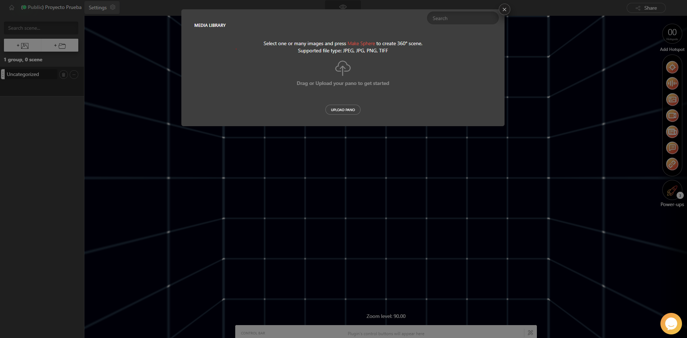
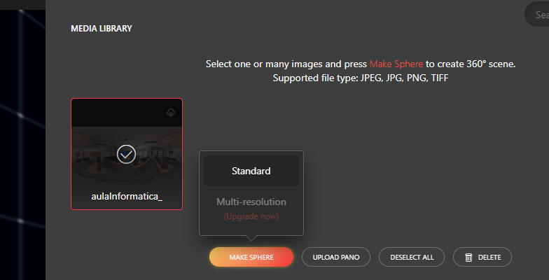

¡Ya estamos dentro del editor de Lapentor! Como puedes observar, la interfaz se divide en tres grandes zonas bien diferenciadas que utilizaremos constantemente para construir la experiencia interactiva

📁 1. Menú Lateral Izquierdo: Gestión de Escenas
En esta columna se organizará la estructura de tu tour virtual.
- Search scene...: Un buscador para localizar estancias rápidamente si tu tour tiene muchas habitaciones.
- Botones + 🖼️ y + 📁: Te permiten añadir nuevas escenas individuales o crear carpetas (grupos) para organizar el recorrido (por ejemplo, una carpeta llamada "Planta Baja" y otra "Primera Planta").
- Uncategorized (Sin categoría): Es el contenedor por defecto donde irán apareciendo las imágenes que subas antes de que las organices.
🛠️ 2. Menú Lateral Derecho: Herramientas Interactivas (Hotspots)
Esta barra contiene los botones para añadir interactividad sobre nuestras imágenes panorámicas. Desde aquí podremos arrastrar elementos al escenario para conectar habitaciones, mostrar textos o incluir vídeos:
- 🎯 Add Hotspot / Icono de mira: Para situar puntos interactivos en la imagen.
- 🎵 Icono de sonido: Añade audio localizado en un punto del escenario.
- 🖼️ Icono de fotografía: Para incrustar imágenes flotantes explicativas.
- 🎥 Icono de vídeo: Permite integrar reproductores de vídeo dentro del entorno virtual.
- 📰 Icono de artículo / texto: Inserta bloques de lectura o descripciones detalladas.
- 🚀 Power-ups: En la zona inferior derecha, este botón da acceso a complementos avanzados (como mapas de orientación, menús de navegación o plugins especiales).
📥 3. Ventana Central: Subida de Imágenes Panorámicas
Al iniciar un proyecto, la ventana flotante MEDIA LIBRARY se abrirá en el centro de la pantalla cobrando todo el protagonismo. Un tour virtual no existe sin sus fondos, por lo que este es el paso inicial obligatorio

Formatos compatibles: El sistema te recuerda que acepta archivos de imagen estándar de alta resolución en formatos JPEG, JPG, PNG y TIFF.
¿Cómo subirlas?: Tienes dos opciones muy cómodas:
- Arrastrar tus archivos directamente desde la carpeta de tu ordenador y soltarlos sobre la zona del icono de la nube ("Drag or Upload...").
- Hacer clic en el botón gris central UPLOAD PANO para abrir el explorador de archivos de tu equipo y seleccionar las imágenes panorámicas de 360° que desees cargar.